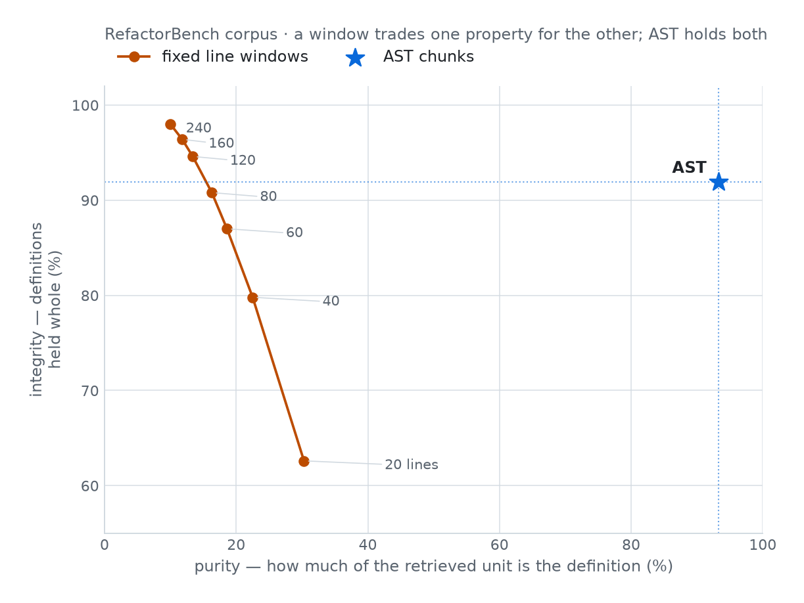
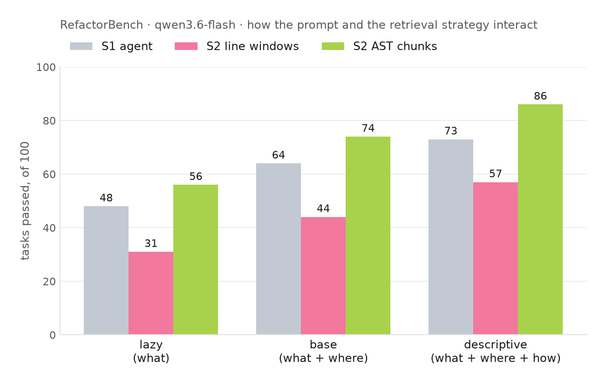
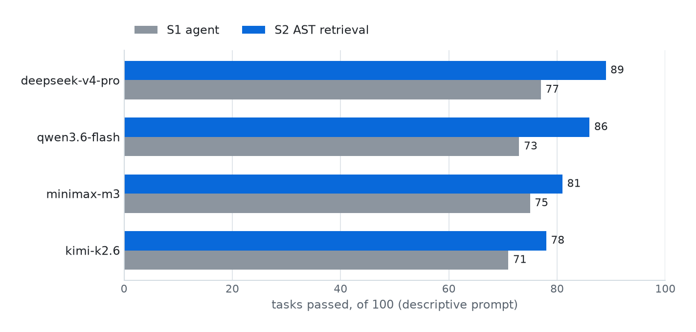
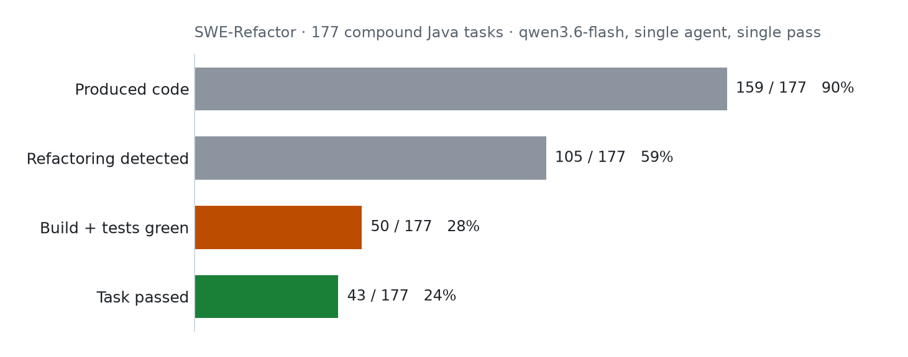

RefactorPlatform
An Open-Source Harness for Controlled Evaluation of Repository-Scale Refactoring Agents
*Equal contribution.
Abstract
Repository-scale refactoring requires coding agents to propagate a single change across many interdependent files without altering program behavior, yet to our knowledge no existing harness isolates the design choices that determine agent success on this task. We present RefactorPlatform, an open-source evaluation harness that holds the environment fixed and varies each design axis explicitly: model backbone (via OpenRouter and GitHub Copilot CLI), execution regime (baseline, retrieval-augmented, and multi-agent), and prompt specificity. Each run executes in an isolated workspace with live terminal streaming, per-task logging of tokens, diffs, and transcripts, AST-based verification, and exportable telemetry for audit and reproduction. Demonstrating the platform on 100 multi-file RefactorBench tasks across four model families, we illustrate the analyses it supports: AST-aware chunking outperforms naive token-window chunking by 25-30% across prompt modes, whereas naive retrieval falls below the retrieval-free baseline; a lean retrieval-augmented single agent (86%) beats the sub-agent configuration we evaluated (66%) on matched tasks with no task passing under delegation that fails under retrieval; and retrieval's accuracy gains absorb its token overhead, leaving cost per successful refactoring unchanged. RefactorPlatform is open-sourced to make refactoring-agent evaluation reproducible and auditable.
Motivation
Manual propagation of repository-scale changes is slow and a persistent source of technical debt. Evaluating whether a coding agent can automate it is a distinct problem from evaluating code generation: benchmarks built for function-level synthesis or issue resolution do not test multi-file propagation under a behavior-preservation constraint.
Repository scale is a distinct evaluation problem
Function-level benchmarks do not exercise cross-file reasoning; issue-resolution suites such as SWE-bench do not require the change to preserve behavior. Repository-scale refactoring requires both at once.
Design choices are entangled in prior evaluations
Model backbone, retrieval, prompting, and orchestration typically change together between runs, so a pass-rate difference cannot be attributed to any one of them.
Surface similarity does not imply correctness
A patch that compiles or resembles a reference diff can still be behaviorally wrong, yet many evaluations stop at that surface check.
Agent behavior is often hard to audit
Aggregate pass rates say little about how a result was reached; without per-task transcripts, diffs, and token accounting, a failure is difficult to diagnose after the fact.
Approach
Most agent evaluations change several things at once — model, scaffolding, and prompt together — so a pass-rate difference can't be attributed to any one of them. RefactorPlatform holds the task and workspace fixed and varies exactly one design axis per run, across three cumulative execution regimes, so each comparison isolates a single cause. The same infrastructure serves two audiences: researchers isolating which design choice drives a result, and practitioners auditing a configuration against their own codebase before committing to one in production.
1) Task
A multi-file refactoring instruction against a real repository.
2) Isolated workspace
Every run executes in an isolated workspace, escalated across three cumulative execution regimes:
- S1 Baseline — a terminal coding assistant, no retrieval or delegation.
- S2 +Retrieval — adds task-scoped AST retrieval, grounding edits in syntax-tree chunks rather than fixed line windows.
- S3 +Delegation — adds native sub-agent delegation on top of S1+S2.
Cumulative — each regime is a superset of the last.
3) Verification gate
AST unit tests for Python, or extract, compile, test, and RefactoringMiner for Java.
4) Telemetry export
Diffs, tokens, and transcripts, exportable per task as CSV/ZIP.
Results
(qwen3.6-flash, S2 AST retrieval)
Structural retrieval
AST-aware chunking sits alone on the purity/integrity frontier that naive fixed-line windows only approach at much larger window sizes.

Prompt sensitivity
AST-chunk retrieval leads at every prompt specificity level; naive line-window retrieval trails even the no-retrieval baseline.

Cross-model gains
AST-aware retrieval improves pass rate for every model family evaluated, not just the flagship backbone.

SWE-Refactor verification
Java is held to a triple gate: code extraction, structural detection, and a green build and test suite, applied in sequence.

| Model | S1 Baseline | S2 + AST Retrieval | Δ | $/success (S1) | $/success (S2) |
|---|---|---|---|---|---|
| qwen3.6-flash | 73% | 86% | +13pp | $0.13 | $0.13 |
| minimax-m3 | 75% | 81% | +6pp | $0.65 | $0.66 |
| kimi-k2.6 | 71% | 78% | +7pp | $0.63 | $0.63 |
| deepseek-v4-pro | 77% | 89% | +12pp | $1.39 | $1.39 |
A single lean retrieval-augmented agent (86%) also outperforms sub-agent delegation (66%, S3, Copilot sub-agents), with no task passing under delegation that fails under retrieval, and retrieval's accuracy gains absorb its token overhead: cost per successful refactoring shifts by no more than $0.01 across all four models. See the paper for the full Java (SWE-Refactor) results.
| Prompt mode | S1 +LSP | S1 −LSP | S2 Naive chunking | S2 AST chunking |
|---|---|---|---|---|
| Descriptive | 73% | 71% | 57% | 86% |
| Base | 64% | 59% | 44% | 74% |
| Lazy | 48% | 44% | 31% | 56% |
S3 (Copilot sub-agents, native delegation) was run once under descriptive prompting and scored 66% — behind S2's 86% and roughly matching S1's 73%. AST-aware chunking beats naive fixed-line-window chunking by 25–30pp at every prompt mode, and beats the no-retrieval S1 baseline by 8–13pp; naive chunking trails the no-retrieval baseline outright. See the paper for the full cost-efficiency and Java (SWE-Refactor) results.
BibTeX
@inproceedings{refactorplatform2026,
title = {RefactorPlatform: An Open-Source Harness for Controlled Evaluation of Repository-Scale Refactoring Agents},
author = {Ben Amor, Aziz and Mali, Drish and Acharya, Mann and Iyer, Vijayasri and Bratières, Sébastien},
booktitle = {Proceedings of the 2026 Conference on Empirical Methods in Natural Language Processing: System Demonstrations},
publisher = {Association for Computational Linguistics},
year = {2026}
}